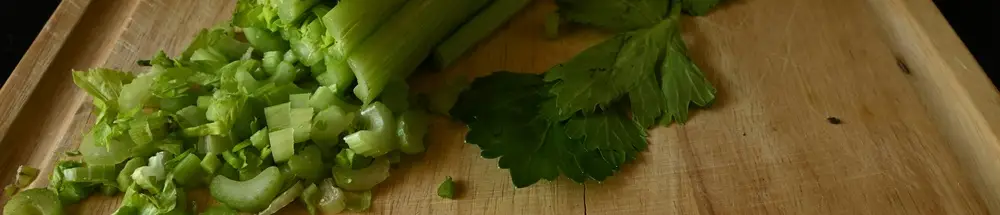

Review Vegetable Slicer Manual: Solusi Cepat Potong Sayur ala Korek Api

Bagi siapa pun yang pernah terlibat dalam tradisi memasak besar atau rewang saat hari raya seperti Lebaran, pasti paham betapa berharganya efisiensi di dapur. Di antara banyak tugas, salah satu yang paling memakan waktu dan tenaga adalah memotong sayuran dalam jumlah banyak, terutama membuat potongan korek api (julienne) untuk hidangan seperti kentang mustofa, urap, atau asinan.
Memotong satu per satu dengan pisau tentu membutuhkan kesabaran super. Namun, kini ada solusi praktis yang bisa mengubah pekerjaan melelahkan ini menjadi sangat cepat dan menyenangkan: alat pemotong sayur manual atau manual vegetable slicer.
Alat ini adalah pahlawan tanpa tanda jasa di dapur, terutama untuk persiapan masak dalam porsi besar. Mari kita ulas cara kerja, keunggulan, dan tips menggunakannya agar hasil masakan Anda sempurna.
Apa Itu Vegetable Slicer Manual?
Vegetable slicer yang kita bahas adalah jenis alat pemotong sayur yang dioperasikan sepenuhnya dengan tenaga tangan, tanpa memerlukan listrik sama sekali. Alat ini biasanya terbuat dari plastik berkualitas dengan mata pisau stainless steel yang tajam dan dapat diganti-ganti.
Desainnya yang sederhana membuatnya menjadi pilihan ideal untuk semua jenis dapur, termasuk dapur tradisional di kampung halaman yang mungkin memiliki keterbatasan stopkontak listrik. Dengan harga yang umumnya sangat terjangkau, berkisar di angka seratus ribuan, alat ini menawarkan nilai yang luar biasa.
Fitur dan Keunggulan Utama
-
Tiga Pilihan Mata Pisau Multifungsi
Biasanya, alat ini dilengkapi dengan 3 jenis drum pisau (silinder) yang bisa diganti sesuai kebutuhan:- Pisau Korek Api Halus (Fine Julienne): Sempurna untuk membuat kentang mustofa yang renyah atau isian lumpia.
- Pisau Korek Api Kasar (Coarse Julienne): Cocok untuk salad sayur, acar, atau urap.
- Pisau Irisan Tipis (Slicer): Ideal untuk membuat keripik kentang, irisan timun, atau bawang.
-
Operasi 100% Manual
Cukup dengan memutar tuas (engkol), Anda bisa memotong berbagai jenis sayuran. Keunggulan ini membuatnya hemat energi dan bisa diandalkan di mana saja. -
Desain yang Aman Digunakan
Alat ini dilengkapi dengan wadah penekan (plunger) yang berfungsi untuk mendorong sayuran ke arah mata pisau. Desain ini menjaga tangan Anda tetap aman dan jauh dari pisau yang sedang berputar.
Panduan Cara Menggunakan Vegetable Slicer Manual
Mengoperasikan alat ini sangatlah intuitif. Ikuti langkah-langkah mudah berikut:
-
Rakit Alat dan Pilih Mata Pisau
Kunci dasar alat pada permukaan yang rata dan bersih. Pilih drum pisau sesuai hasil potongan yang Anda inginkan, lalu masukkan ke dalam badan alat dan pasang tuas pemutarnya. -
Siapkan Sayuran
Cuci bersih sayuran yang akan digunakan. Untuk sayuran yang berukuran besar seperti kentang, bengkuang, atau pepaya mentah, potong terlebih dahulu menjadi beberapa bagian agar muat masuk ke dalam corong penampung. -
Masukkan Sayuran dan Tekan
Letakkan potongan sayur ke dalam corong. Gunakan wadah penekan plastik untuk menekan sayuran ke bawah dengan tekanan yang stabil. -
Putar Tuas dan Nikmati Hasilnya
Sambil terus menekan, putar tuas pemutar secara manual dengan kecepatan konsisten. Dalam sekejap, potongan sayur yang rapi dan seragam akan keluar dari bagian depan alat. Siapkan wadah untuk menampung hasilnya.
Tips Agar Hasil Maksimal dan Perawatan
- Sayuran yang Cocok: Alat ini bekerja paling baik pada sayuran yang keras dan padat seperti wortel, kentang, timun, lobak, zucchini, dan pepaya mentah.
- Tekanan Stabil: Berikan tekanan yang konsisten namun tidak berlebihan saat memutar tuas untuk mendapatkan hasil potongan yang tidak terputus dan seragam.
- Cara Membersihkan: Setelah digunakan, segera bongkar semua komponen. Cuci bersih badan alat, tuas, penekan, dan drum pisau dengan air sabun, lalu keringkan. Perawatan yang baik akan menjaga mata pisau tetap tajam dan awet.
Dengan vegetable slicer manual, pekerjaan memotong sayur yang tadinya memakan waktu berjam-jam kini bisa selesai dalam hitungan menit. Alat sederhana ini adalah investasi cerdas untuk efisiensi dan kegembiraan di dapur Anda. Semoga bermanfaat!